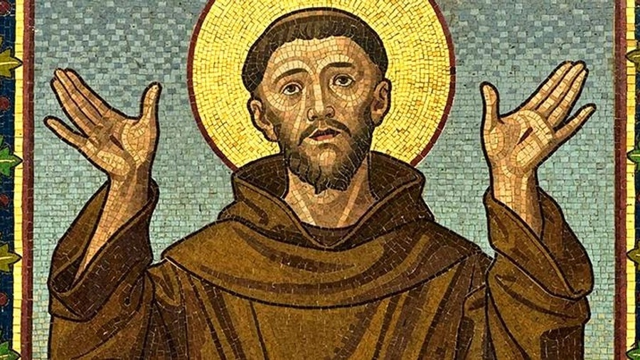
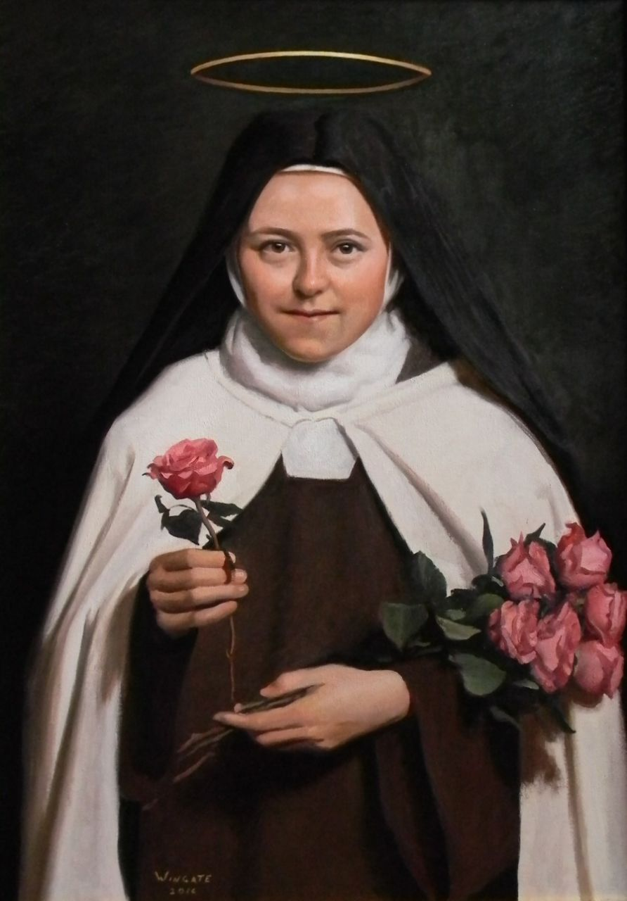

Um espaço dedicado a apresentar diariamente a história e a vida dos santos celebrados pela Igreja Católica.

Conhecido por sua vida de simplicidade, humildade e amor à criação.
Data de celebração: 4 de outubro
Classificação litúrgica: Memória obrigatória

Conhecida pela espiritualidade da Pequena Via e por sua confiança no amor de Deus.
Data de celebração: 1 de outubro
Classificação litúrgica: Memória obrigatória
| Tempo Litúrgico | Descrição |
|---|---|
| Advento | Tempo de preparação e expectativa para o Natal do Senhor. |
| Tempo do Natal | Celebra o nascimento e a manifestação de Jesus Cristo. |
| Tempo Comum I | Período entre o Tempo do Natal e o início da Quaresma. |
| Quaresma | Tempo de preparação para a Páscoa, marcado pela oração, penitência e conversão. |
| Tríduo Pascal | Compreende a celebração da Paixão, Morte e Ressurreição de Cristo, tendo seu ápice na Vigília Pascal. |
| Tempo Pascal | Período de cinquenta dias que vai do Domingo da Ressurreição até Pentecostes. |
| Tempo Comum II | Período que segue o Tempo Pascal até o início de um novo Ano Litúrgico. |